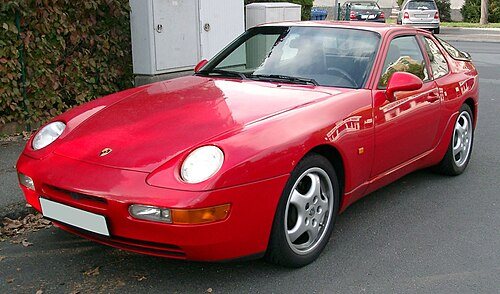

O Porsche 968 é um automóvel desportivo apresentado pela Porsche em 1992 como substituto do Porsche 944. Ao todo, entre 1992 e 1995 foram produzidas 12.793 unidades apenas. O motor do 944S de 16 válvulas foi aumentado para 2990 cc, debitando 240 cavalos e sendo acoplado a uma caixa de seis velocidades. Na versão Turbo, equipada com o sistema VarioCam, a potência era de 305 cavalos. Uma versão cabriolet também conheceu bastante sucesso.